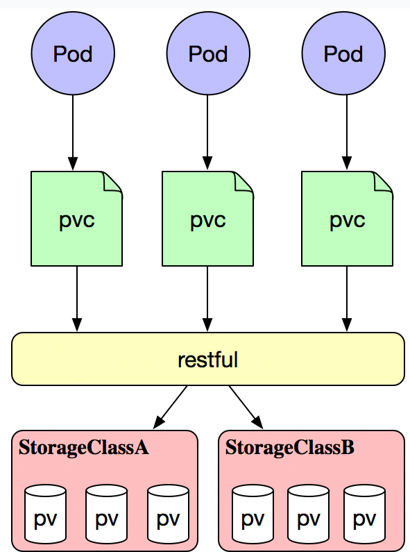

数据卷
一、存储卷的概念和类型
为了保证数据的持久性，必须保证数据在外部存储在docker容器中，为了实现数据的持久性存储，在宿主机和容器内做映射，可以保证在容器的生命周期结束，数据依旧可以实现持久性存储。但是在k8s中，由于pod分布在各个不同的节点之上，并不能实现不同节点之间持久性数据的共享，并且，在节点故障时，可能会导致数据的永久性丢失。为此，k8s就引入了外部存储卷的功能。 k8s的存储卷类型：
[root@k8s-master ~]# kubectl explain pod.spec.volumes #查看k8s支持的存储类型
KIND: Pod
VERSION: v1
常用分类：
emptyDir（临时目录）:Pod删除，数据也会被清除，这种存储成为emptyDir，用于数据的临时存储。
hostPath(宿主机目录映射):
本地的SAN(iSCSI,FC)、NAS(nfs,cifs,http)存储
分布式存储（glusterfs，rbd，cephfs）
云存储（EBS，Azure Disk）
persistentVolumeClaim -->PVC(存储卷创建申请)当你需要创建一个存储卷时，只需要进行申请对应的存储空间即可使用，这就是PVC。其关联关系如图：
上图解析：在Pod上定义一个PVC，该PVC要关联到当前名称空间的PVC资源，该PVC只是一个申请，PVC需要和PV进行关联。PV属于存储上的一部分存储空间。但是该方案存在的问题是，我们无法知道用户是什么时候去创建Pod，也不知道创建Pod时定义多大的PVC，那么如何实现按需创建呢？？？
不需要PV层，把所有存储空间抽象出来，这一个抽象层称为存储类，当用户创建PVC需要用到PV时，可以向存储类申请对应的存储空间，存储类会按照需求创建对应的存储空间，这就是PV的动态供给，如图： 那么PV的动态供给，其重点是在存储类的定义，其分类大概是对存储的性能进行分类的，如图：金存储类、银存储类、铜存储类等。
总结： k8s要使用存储卷，需要2步： 1、在pod定义volume，并指明关联到哪个存储设备 2、在容器使用volume mount进行挂载

二、emptyDir存储卷演示
一个emptyDir 第一次创建是在一个pod被指定到具体node的时候，并且会一直存在在pod的生命周期当中，正如它的名字一样，它初始化是一个空的目录，pod中的容器都可以读写这个目录，这个目录可以被挂在到各个容器相同或者不相同的的路径下。当一个pod因为任何原因被移除的时候，这些数据会被永久删除。注意：一个容器崩溃了不会导致数据的丢失，因为容器的崩溃并不移除pod.
emptyDir 磁盘的作用： （1）普通空间，基于磁盘的数据存储 （2）作为从崩溃中恢复的备份点 （3）存储那些那些需要长久保存的数据，例web服务中的数据 默认的，emptyDir 磁盘会存储在主机所使用的媒介上，可能是SSD，或者网络硬盘，这主要取决于你的环境。当然，我们也可以将 emptyDir.medium的值设置为Memory来告诉Kubernetes 来挂在一个基于内存的目录tmpfs，因为 tmpfs速度会比硬盘块度了，但是，当主机重启的时候所有的数据都会丢失。
[root@k8s-master ~]# kubectl explain pods.spec.volumes.emptyDir #查看emptyDir存储定义
[root@k8s-master ~]# kubectl explain pods.spec.containers.volumeMounts #查看容器挂载方式
[root@k8s-master ~]# cd mainfests && mkdir volumes && cd volumes
[root@k8s-master volumes]# cp ../pod-demo.yaml ./
[root@k8s-master volumes]# mv pod-demo.yaml pod-vol-demo.yaml
[root@k8s-master volumes]# vim pod-vol-demo.yaml #创建emptyDir的清单
apiVersion: v1
kind: Pod
metadata:
name: pod-demo
namespace: default
labels:
app: myapp
tier: frontend
annotations:
magedu.com/create-by:"cluster admin"
spec:
containers:
- name: myapp
image: ikubernetes/myapp:v1
imagePullPolicy: IfNotPresent
ports:
- name: http
containerPort: 80
volumeMounts: #在容器内定义挂载存储名称和挂载路径
- name: html
mountPath: /usr/share/nginx/html/
- name: busybox
image: busybox:latest
imagePullPolicy: IfNotPresent
volumeMounts:
- name: html
mountPath: /data/ #在容器内定义挂载存储名称和挂载路径
command: ['/bin/sh','-c','while true;do echo $(date) >> /data/index.html;sleep 2;done']
volumes: #定义存储卷
- name: html #定义存储卷名称
emptyDir: {} #定义存储卷类型
[root@k8s-master volumes]# kubectl apply -f pod-vol-demo.yaml
pod/pod-vol-demo created
[root@k8s-master volumes]# kubectl get pods
NAME READY STATUS RESTARTS AGE
pod-vol-demo 2/2 Running 0 27s
[root@k8s-master volumes]# kubectl get pods -o wide
NAME READY STATUS RESTARTS AGE IP NODE
......
pod-vol-demo 2/2 Running 0 16s 10.244.2.34 k8s-node02
......
在上面，我们定义了2个容器，其中一个容器是输入日期到index.html中，然后验证访问nginx的html是否可以获取日期。以验证两个容器之间挂载的emptyDir实现共享。如下访问验证:
[root@k8s-master volumes]# curl 10.244.2.34 #访问验证
Tue Oct 9 03:56:53 UTC 2018
Tue Oct 9 03:56:55 UTC 2018
Tue Oct 9 03:56:57 UTC 2018
Tue Oct 9 03:56:59 UTC 2018
Tue Oct 9 03:57:01 UTC 2018
Tue Oct 9 03:57:03 UTC 2018
Tue Oct 9 03:57:05 UTC 2018
Tue Oct 9 03:57:07 UTC 2018
Tue Oct 9 03:57:09 UTC 2018
Tue Oct 9 03:57:11 UTC 2018
Tue Oct 9 03:57:13 UTC 2018
Tue Oct 9 03:57:15 UTC 2018
三、hostPath存储卷演示
hostPath宿主机路径，就是把pod所在的宿主机之上的脱离pod中的容器名称空间的之外的宿主机的文件系统的某一目录和pod建立关联关系，在pod删除时，存储数据不会丢失。
（1）查看hostPath存储类型定义
[root@k8s-master volumes]# kubectl explain pods.spec.volumes.hostPath
KIND: Pod
VERSION: v1
RESOURCE: hostPath <Object>
DESCRIPTION:
HostPath represents a pre-existing file or directory on the host machine
that is directly exposed to the container. This is generally used for
system agents or other privileged things that are allowed to see the host
machine. Most containers will NOT need this. More info:
https://kubernetes.io/docs/concepts/storage/volumes#hostpath
Represents a host path mapped into a pod. Host path volumes do not support
ownership management or SELinux relabeling.
FIELDS:
path <string> -required- #指定宿主机的路径
Path of the directory on the host. If the path is a symlink, it will follow
the link to the real path. More info:
https://kubernetes.io/docs/concepts/storage/volumes#hostpath
type <string>
Type for HostPath Volume Defaults to "" More info:
https://kubernetes.io/docs/concepts/storage/volumes#hostpath
type：
DirectoryOrCreate 宿主机上不存在创建此目录
Directory 必须存在挂载目录
FileOrCreate 宿主机上不存在挂载文件就创建
File 必须存在文件
（2）清单定义
[root@k8s-master volumes]# vim pod-hostpath-vol.yaml
apiVersion: v1
kind: Pod
metadata:
name: pod-vol-hostpath
namespace: default
spec:
containers:
- name: myapp
image: ikubernetes/myapp:v1
volumeMounts:
- name: html
mountPath: /usr/share/nginx/html
volumes:
- name: html
hostPath:
path: /data/pod/volume1
type: DirectoryOrCreate
（3）在node节点上创建挂载目录
[root@k8s-node01 ~]# mkdir -p /data/pod/volume1
[root@k8s-node01 ~]# vim /data/pod/volume1/index.html
node01.magedu.com
[root@k8s-node02 ~]# mkdir -p /data/pod/volume1
[root@k8s-node02 ~]# vim /data/pod/volume1/index.html
node02.magedu.com
[root@k8s-master volumes]# kubectl apply -f pod-hostpath-vol.yaml
pod/pod-vol-hostpath created
（4）访问测试
[root@k8s-master volumes]# kubectl get pods -o wide
NAME READY STATUS RESTARTS AGE IP NODE
......
pod-vol-hostpath 1/1 Running 0 37s 10.244.2.35 k8s-node02
......
[root@k8s-master volumes]# curl 10.244.2.35
node02.magedu.com
[root@k8s-master volumes]# kubectl delete -f pod-hostpath-vol.yaml #删除pod，再重建，验证是否依旧可以访问原来的内容
[root@k8s-master volumes]# kubectl apply -f pod-hostpath-vol.yaml
pod/pod-vol-hostpath created
[root@k8s-master volumes]# curl 10.244.2.37
node02.magedu.com
hostPath可以实现持久存储，但是在node节点故障时，也会导致数据的丢失
四、nfs共享存储卷演示
nfs使的我们可以挂在已经存在的共享到的我们的Pod中，和emptyDir不同的是，emptyDir会被删除当我们的Pod被删除的时候，但是nfs不会被删除，仅仅是解除挂在状态而已，这就意味着NFS能够允许我们提前对数据进行处理，而且这些数据可以在Pod之间相互传递.并且，nfs可以同时被多个pod挂在并进行读写
注意：必须先报纸NFS服务器正常运行在我们进行挂在nfs的时候
（1）在stor01节点上安装nfs，并配置nfs服务
[root@stor01 ~]# yum install -y nfs-utils ==》192.168.56.14
[root@stor01 ~]# mkdir /data/volumes -pv
[root@stor01 ~]# vim /etc/exports
/data/volumes 192.168.56.0/24(rw,no_root_squash)
[root@stor01 ~]# systemctl start nfs
[root@stor01 ~]# showmount -e
Export list for stor01:
/data/volumes 192.168.56.0/24
（2）在node01和node02节点上安装nfs-utils，并测试挂载
[root@k8s-node01 ~]# yum install -y nfs-utils
[root@k8s-node02 ~]# yum install -y nfs-utils
[root@k8s-node02 ~]# mount -t nfs stor01:/data/volumes /mnt
[root@k8s-node02 ~]# mount
......
stor01:/data/volumes on /mnt type nfs4 (rw,relatime,vers=4.1,rsize=131072,wsize=131072,namlen=255,hard,proto=tcp,port=0,timeo=600,retrans=2,sec=sys,clientaddr=192.168.56.13,local_lock=none,addr=192.168.56.14)
[root@k8s-node02 ~]# umount /mnt/
（3）创建nfs存储卷的使用清单
[root@k8s-master volumes]# cp pod-hostpath-vol.yaml pod-nfs-vol.yaml
[root@k8s-master volumes]# vim pod-nfs-vol.yaml
apiVersion: v1
kind: Pod
metadata:
name: pod-vol-nfs
namespace: default
spec:
containers:
- name: myapp
image: ikubernetes/myapp:v1
volumeMounts:
- name: html
mountPath: /usr/share/nginx/html
volumes:
- name: html
nfs:
path: /data/volumes
server: stor01
[root@k8s-master volumes]# kubectl apply -f pod-nfs-vol.yaml
pod/pod-vol-nfs created
[root@k8s-master volumes]# kubectl get pods -o wide
NAME READY STATUS RESTARTS AGE IP NODE
pod-vol-nfs 1/1 Running 0 21s 10.244.2.38 k8s-node02
（3）在nfs服务器上创建index.html
[root@stor01 ~]# cd /data/volumes
[root@stor01 volumes ~]# vim index.html
<h1> nfs stor01</h1>
[root@k8s-master volumes]# curl 10.244.2.38
<h1> nfs stor01</h1>
[root@k8s-master volumes]# kubectl delete -f pod-nfs-vol.yaml #删除nfs相关pod，再重新创建，可以得到数据的持久化存储
pod "pod-vol-nfs" deleted
[root@k8s-master volumes]# kubectl apply -f pod-nfs-vol.yaml
五、PVC和PV的概念
我们前面提到kubernetes提供那么多存储接口，但是首先kubernetes的各个Node节点能管理这些存储，但是各种存储参数也需要专业的存储工程师才能了解，由此我们的kubernetes管理变的更加复杂的。由此kubernetes提出了PV和PVC的概念，这样开发人员和使用者就不需要关注后端存储是什么，使用什么参数等问题。如下图：
PersistentVolume（PV）是集群中已由管理员配置的一段网络存储。 集群中的资源就像一个节点是一个集群资源。 PV是诸如卷之类的卷插件，但是具有独立于使用PV的任何单个pod的生命周期。 该API对象捕获存储的实现细节，即NFS，iSCSI或云提供商特定的存储系统。 PersistentVolumeClaim（PVC）是用户存储的请求。PVC的使用逻辑：在pod中定义一个存储卷（该存储卷类型为PVC），定义的时候直接指定大小，pvc必须与对应的pv建立关系，pvc会根据定义去pv申请，而pv是由存储空间创建出来的。pv和pvc是kubernetes抽象出来的一种存储资源。
虽然PersistentVolumeClaims允许用户使用抽象存储资源，但是常见的需求是，用户需要根据不同的需求去创建PV，用于不同的场景。而此时需要集群管理员提供不同需求的PV，而不仅仅是PV的大小和访问模式，但又不需要用户了解这些卷的实现细节。 对于这样的需求，此时可以采用StorageClass资源。这个在前面就已经提到过此方案。
PV是集群中的资源。 PVC是对这些资源的请求，也是对资源的索赔检查。 PV和PVC之间的相互作用遵循这个生命周期：
Provisioning（配置）---> Binding（绑定）--->Using（使用）---> Releasing（释放） ---> Recycling（回收）
Provisioning
这里有两种PV的提供方式:静态或者动态 静态-->直接固定存储空间： 集群管理员创建一些 PV。它们携带可供集群用户使用的真实存储的详细信息。 它们存在于Kubernetes API中，可用于消费。
动态-->通过存储类进行动态创建存储空间： 当管理员创建的静态 PV 都不匹配用户的 PVC 时，集群可能会尝试动态地为 PVC 配置卷。此配置基于 StorageClasses：PVC 必须请求存储类，并且管理员必须已创建并配置该类才能进行动态配置。 要求该类的声明有效地为自己禁用动态配置。
Binding
在动态配置的情况下，用户创建或已经创建了具有特定数量的存储请求和特定访问模式的PersistentVolumeClaim。 主机中的控制回路监视新的PVC，找到匹配的PV（如果可能），并将 PVC 和 PV 绑定在一起。 如果为新的PVC动态配置PV，则循环将始终将该PV绑定到PVC。 否则，用户总是至少得到他们要求的内容，但是卷可能超出了要求。 一旦绑定，PersistentVolumeClaim绑定是排他的，不管用于绑定它们的模式。
如果匹配的卷不存在，PVC将保持无限期。 随着匹配卷变得可用，PVC将被绑定。 例如，提供许多50Gi PV的集群将不匹配要求100Gi的PVC。 当集群中添加100Gi PV时，可以绑定PVC。
Using
Pod使用PVC作为卷。 集群检查声明以找到绑定的卷并挂载该卷的卷。 对于支持多种访问模式的卷，用户在将其声明用作pod中的卷时指定所需的模式。
一旦用户有声明并且该声明被绑定，绑定的PV属于用户，只要他们需要它。 用户通过在其Pod的卷块中包含PersistentVolumeClaim来安排Pods并访问其声明的PV。
Releasing
当用户完成卷时，他们可以从允许资源回收的API中删除PVC对象。 当声明被删除时，卷被认为是“释放的”，但是它还不能用于另一个声明。 以前的索赔人的数据仍然保留在必须根据政策处理的卷上.
Reclaiming
PersistentVolume的回收策略告诉集群在释放其声明后，该卷应该如何处理。 目前，卷可以是保留，回收或删除。 保留可以手动回收资源。 对于那些支持它的卷插件，删除将从Kubernetes中删除PersistentVolume对象，以及删除外部基础架构（如AWS EBS，GCE PD，Azure Disk或Cinder卷）中关联的存储资产。 动态配置的卷始终被删除
Recycling
如果受适当的卷插件支持，回收将对卷执行基本的擦除（rm -rf / thevolume / *），并使其再次可用于新的声明。
六、NFS使用PV和PVC
实验图如下：

[root@k8s-master ~]# kubectl explain pv #查看pv的定义方式
FIELDS:
apiVersion
kind
metadata
spec
[root@k8s-master ~]# kubectl explain pv.spec #查看pv定义的规格
spec:
nfs（定义存储类型）
path（定义挂载卷路径）
server（定义服务器名称）
accessModes（定义访问模型，有以下三种访问模型，以列表的方式存在，也就是说可以定义多个访问模式）
ReadWriteOnce（RWO） 单节点读写
ReadOnlyMany（ROX） 多节点只读
ReadWriteMany（RWX） 多节点读写
capacity（定义PV空间的大小）
storage（指定大小）
[root@k8s-master volumes]# kubectl explain pvc #查看PVC的定义方式
KIND: PersistentVolumeClaim
VERSION: v1
FIELDS:
apiVersion <string>
kind <string>
metadata <Object>
spec <Object>
[root@k8s-master volumes]# kubectl explain pvc.spec
spec:
accessModes（定义访问模式，必须是PV的访问模式的子集）
resources（定义申请资源的大小）
requests:
storage:
1、配置nfs存储
[root@stor01 volumes]# mkdir v{1,2,3,4,5}
[root@stor01 volumes]# vim /etc/exports
/data/volumes/v1 192.168.56.0/24(rw,no_root_squash)
/data/volumes/v2 192.168.56.0/24(rw,no_root_squash)
/data/volumes/v3 192.168.56.0/24(rw,no_root_squash)
/data/volumes/v4 192.168.56.0/24(rw,no_root_squash)
/data/volumes/v5 192.168.56.0/24(rw,no_root_squash)
[root@stor01 volumes]# exportfs -arv
exporting 192.168.56.0/24:/data/volumes/v5
exporting 192.168.56.0/24:/data/volumes/v4
exporting 192.168.56.0/24:/data/volumes/v3
exporting 192.168.56.0/24:/data/volumes/v2
exporting 192.168.56.0/24:/data/volumes/v1
[root@stor01 volumes]# showmount -e
Export list for stor01:
/data/volumes/v5 192.168.56.0/24
/data/volumes/v4 192.168.56.0/24
/data/volumes/v3 192.168.56.0/24
/data/volumes/v2 192.168.56.0/24
/data/volumes/v1 192.168.56.0/24
2、定义PV
这里定义5个PV，并且定义挂载的路径以及访问模式，还有PV划分的大小。
[root@k8s-master volumes]# kubectl explain pv
[root@k8s-master volumes]# kubectl explain pv.spec.nfs
[root@k8s-master volumes]# vim pv-demo.yaml
apiVersion: v1
kind: PersistentVolume
metadata:
name: pv001
labels:
name: pv001
spec:
nfs:
path: /data/volumes/v1
server: stor01
accessModes: ["ReadWriteMany","ReadWriteOnce"]
capacity:
storage: 1Gi
---
apiVersion: v1
kind: PersistentVolume
metadata:
name: pv002
labels:
name: pv002
spec:
nfs:
path: /data/volumes/v2
server: stor01
accessModes: ["ReadWriteOnce"]
capacity:
storage: 2Gi
---
apiVersion: v1
kind: PersistentVolume
metadata:
name: pv003
labels:
name: pv003
spec:
nfs:
path: /data/volumes/v3
server: stor01
accessModes: ["ReadWriteMany","ReadWriteOnce"]
capacity:
storage: 2Gi
---
apiVersion: v1
kind: PersistentVolume
metadata:
name: pv004
labels:
name: pv004
spec:
nfs:
path: /data/volumes/v4
server: stor01
accessModes: ["ReadWriteMany","ReadWriteOnce"]
capacity:
storage: 4Gi
---
apiVersion: v1
kind: PersistentVolume
metadata:
name: pv005
labels:
name: pv005
spec:
nfs:
path: /data/volumes/v5
server: stor01
accessModes: ["ReadWriteMany","ReadWriteOnce"]
capacity:
storage: 5Gi
[root@k8s-master volumes]# kubectl apply -f pv-demo.yaml
persistentvolume/pv001 created
persistentvolume/pv002 created
persistentvolume/pv003 created
persistentvolume/pv004 created
persistentvolume/pv005 created
[root@k8s-master volumes]# kubectl get pv
NAME CAPACITY ACCESS MODES RECLAIM POLICY STATUS CLAIM STORAGECLASS REASON AGE
pv001 1Gi RWO,RWX Retain Available 7s
pv002 2Gi RWO Retain Available 7s
pv003 2Gi RWO,RWX Retain Available 7s
pv004 4Gi RWO,RWX Retain Available 7s
pv005 5Gi RWO,RWX Retain Available 7s
3、定义PVC
这里定义了pvc的访问模式为多路读写，该访问模式必须在前面pv定义的访问模式之中。定义PVC申请的大小为2Gi，此时PVC会自动去匹配多路读写且大小为2Gi的PV，匹配成功获取PVC的状态即为Bound
[root@k8s-master volumes ~]# vim pod-vol-pvc.yaml
apiVersion: v1
kind: PersistentVolumeClaim
metadata:
name: mypvc
namespace: default
spec:
accessModes: ["ReadWriteMany"]
resources:
requests:
storage: 2Gi
---
apiVersion: v1
kind: Pod
metadata:
name: pod-vol-pvc
namespace: default
spec:
containers:
- name: myapp
image: ikubernetes/myapp:v1
volumeMounts:
- name: html
mountPath: /usr/share/nginx/html
volumes:
- name: html
persistentVolumeClaim:
claimName: mypvc
[root@k8s-master volumes]# kubectl apply -f pod-vol-pvc.yaml
persistentvolumeclaim/mypvc created
pod/pod-vol-pvc created
[root@k8s-master volumes]# kubectl get pv
NAME CAPACITY ACCESS MODES RECLAIM POLICY STATUS CLAIM STORAGECLASS REASON AGE
pv001 1Gi RWO,RWX Retain Available 19m
pv002 2Gi RWO Retain Available 19m
pv003 2Gi RWO,RWX Retain Bound default/mypvc 19m
pv004 4Gi RWO,RWX Retain Available 19m
pv005 5Gi RWO,RWX Retain Available 19m
[root@k8s-master volumes]# kubectl get pvc
NAME STATUS VOLUME CAPACITY ACCESS MODES STORAGECLASS AGE
mypvc Bound pv003 2Gi RWO,RWX 22s
4、测试访问
在存储服务器上创建index.html，并写入数据，通过访问Pod进行查看，可以获取到相应的页面。
[root@stor01 volumes]# cd v3/
[root@stor01 v3]# echo "welcome to use pv3" > index.html
[root@k8s-master volumes]# kubectl get pods -o wide
pod-vol-pvc 1/1 Running 0 3m 10.244.2.39 k8s-node02
[root@k8s-master volumes]# curl 10.244.2.39
welcome to use pv3
七、StorageClass
在pv和pvc使用过程中存在的问题，在pvc申请存储空间时，未必就有现成的pv符合pvc申请的需求，上面nfs在做pvc可以成功的因素是因为我们做了指定的需求处理。那么当PVC申请的存储空间不一定有满足PVC要求的PV事，又该如何处理呢？？？为此，Kubernetes为管理员提供了描述存储"class（类）"的方法（StorageClass）。举个例子，在存储系统中划分一个1TB的存储空间提供给Kubernetes使用，当用户需要一个10G的PVC时，会立即通过restful发送请求，从而让存储空间创建一个10G的image，之后在我们的集群中定义成10G的PV供给给当前的PVC作为挂载使用。在此之前我们的存储系统必须支持restful接口，比如ceph分布式存储，而glusterfs则需要借助第三方接口完成这样的请求。如图： 
[root@k8s-master ~]# kubectl explain storageclass #storageclass也是k8s上的资源
KIND: StorageClass
VERSION: storage.k8s.io/v1
FIELDS:
allowVolumeExpansion <boolean>
allowedTopologies <[]Object>
apiVersion <string>
kind <string>
metadata <Object>
mountOptions <[]string> #挂载选项
parameters <map[string]string> #参数，取决于分配器，可以接受不同的参数。 例如，参数 type 的值 io1 和参数 iopsPerGB 特定于 EBS PV。当参数被省略时，会使用默认值。
provisioner <string> -required- #存储分配器，用来决定使用哪个卷插件分配 PV。该字段必须指定。
reclaimPolicy <string> #回收策略，可以是 Delete 或者 Retain。如果 StorageClass 对象被创建时没有指定 reclaimPolicy ，它将默认为 Delete。
volumeBindingMode <string> #卷的绑定模式
StorageClass 中包含 provisioner、parameters 和 reclaimPolicy 字段，当 class 需要动态分配 PersistentVolume 时会使用到。由于StorageClass需要一个独立的存储系统，此处就不再演示。从其他资料查看定义StorageClass的方式如下：
kind: StorageClass
apiVersion: storage.k8s.io/v1
metadata:
name: standard
provisioner: kubernetes.io/aws-ebs
parameters:
type: gp2
reclaimPolicy: Retain
mountOptions:
- debug
八、配置容器应用：Secret和configMap
在日常单机甚至集群状态下，我们需要对一个应用进行配置，只需要修改其配置文件即可。那么在容器中又该如何提供配置 信息呢？？？例如，为Nginx配置一个指定的server_name或worker进程数，为Tomcat的JVM配置其堆内存大小。传统的实践过程中通常有以下几种方式：
- 启动容器时，通过命令传递参数
- 将定义好的配置文件通过镜像文件进行写入
- 通过环境变量的方式传递配置数据
- 挂载Docker卷传送配置文件而在Kubernetes系统之中也存在这样的组件，就是特殊的存储卷类型。其并不是提供pod存储空间，而是给管理员或用户提供从集群外部向Pod内部的应用注入配置信息的方式。这两种特殊类型的存储卷分别是：configMap和secret
- Secret：用于向Pod传递敏感信息，比如密码，私钥，证书文件等，这些信息如果在容器中定义容易泄露，Secret资源可以让用户将这些信息存储在急群众，然后通过Pod进行挂载，实现敏感数据和系统解耦的效果。
- ConfigMap：主要用于向Pod注入非敏感数据，使用时，用户将数据直接存储在ConfigMap对象当中，然后Pod通过使用ConfigMap卷进行引用，实现容器的配置文件集中定义和管理。
[root@k8s-master volumes]# kubectl explain pods.spec.volumes
......
configMap <Object>
ConfigMap represents a configMap that should populate this volume
secret <Object>
Secret represents a secret that should populate this volume. More info:
https://kubernetes.io/docs/concepts/storage/volumes#secret
8.1、Secret解析
Secret对象存储数据的方式是以键值方式存储数据，在Pod资源进行调用Secret的方式是通过环境变量或者存储卷的方式进行访问数据，解决了密码、token、密钥等敏感数据的配置问题，而不需要把这些敏感数据暴露到镜像或者Pod Spec中。另外，Secret对象的数据存储和打印格式为Base64编码的字符串，因此用户在创建Secret对象时，也需要提供该类型的编码格式的数据。在容器中以环境变量或存储卷的方式访问时，会自动解码为明文格式。需要注意的是，如果是在Master节点上，Secret对象以非加密的格式存储在etcd中，所以需要对etcd的管理和权限进行严格控制。
Secret有4种类型：
- Service Account ：用来访问Kubernetes API，由Kubernetes自动创建，并且会自动挂载到Pod的/run/secrets/kubernetes.io/serviceaccount目录中；
- Opaque ：base64编码格式的Secret，用来存储密码、密钥、信息、证书等，类型标识符为generic；
- kubernetes.io/dockerconfigjson ：用来存储私有docker registry的认证信息，类型标识为docker-registry。
- kubernetes.io/tls：用于为SSL通信模式存储证书和私钥文件，命令式创建类型标识为tls。
创建 Secret的2种方式 命令式创建
- 1、通过 --from-literal：
[root@k8s-master ~]# kubectl create secret -h
Create a secret using specified subcommand.
Available Commands:
docker-registry Create a secret for use with a Docker registry
generic Create a secret from a local file, directory or literal value
tls Create a TLS secret
Usage:
kubectl create secret [flags] [options]
Use "kubectl <command> --help" for more information about a given command.
Use "kubectl options" for a list of global command-line options (applies to all commands).
每个 --from-literal 对应一个信息条目。
[root@k8s-master ~]# kubectl create secret generic mysecret --from-literal=username=admin --from-literal=password=123456
secret/mysecret created
[root@k8s-master ~]# kubectl get secret
NAME TYPE DATA AGE
mysecret Opaque 2 6s
- 2、通过 --from-file：每个文件内容对应一个信息条目。
[root@k8s-master ~]# echo -n admin > ./username
[root@k8s-master ~]# echo -n 123456 > ./password
[root@k8s-master ~]# kubectl create secret generic mysecret --from-file=./username --from-file=./password
secret/mysecret created
[root@k8s-master ~]# kubectl get secret
NAME TYPE DATA AGE
mysecret Opaque 2 6s
- 3、通过 --from-env-file： 文件 env.txt 中每行 Key=Value 对应一个信息条目。
[root@k8s-master ~]# cat << EOF > env.txt
> username=admin
> password=123456
> EOF
[root@k8s-master ~]# kubectl create secret generic mysecret --from-env-file=env.txt
secret/mysecret created
[root@k8s-master ~]# kubectl get secret
NAME TYPE DATA AGE
mysecret Opaque 2 10s
清单式创建
- 通过 YAML 配置文件：
#事先完成敏感数据的Base64编码
[root@k8s-master ~]# echo -n admin |base64
YWRtaW4=
[root@k8s-master ~]# echo -n 123456 |base64
MTIzNDU2
[root@k8s-master ~]# vim secret.yaml
apiVersion: v1
kind: Secret
metadata:
name: mysecret
data:
username: YWRtaW4=
password: MTIzNDU2
[root@k8s-master ~]# kubectl apply -f secret.yaml
secret/mysecret created
[root@k8s-master ~]# kubectl get secret #查看存在的 secret，显示有2条数据
NAME TYPE DATA AGE
mysecret Opaque 2 8s
[root@k8s-master ~]# kubectl describe secret mysecret #查看数据的 Key
Name: mysecret
Namespace: default
Labels: <none>
Annotations:
Type: Opaque
Data
====
username: 5 bytes
password: 6 bytes
[root@k8s-master ~]# kubectl edit secret mysecret #查看具体的value，可以使用该命令
apiVersion: v1
data:
password: MTIzNDU2
username: YWRtaW4=
kind: Secret
metadata:
......
[root@k8s-master ~]# echo -n MTIzNDU2 |base64 --decode #通过 base64 将 Value 反编码：
123456
[root@k8s-master ~]# echo -n YWRtaW4= |base64 --decode
admin
如何使用Secret？？
Pod 可以通过 Volume 或者环境变量的方式使用 Secret
[root@k8s-master volumes]# vim pod-secret-demo.yaml
apiVersion: v1
kind: Pod
metadata:
name: pod-secret
spec:
containers:
- name: pod-secret
image: busybox
args:
- /bin/sh
- -c
- sleep 10;touch /tmp/healthy;sleep 30000
volumeMounts: #将 foo mount 到容器路径 /etc/foo，可指定读写权限为 readOnly。
- name: foo
mountPath: "/etc/foo"
readOnly: true
volumes: #定义 volume foo，来源为 secret mysecret。
- name: foo
secret:
secretName: mysecret
[root@k8s-master volumes]# kubectl apply -f pod-secret-demo.yaml
pod/pod-secret created
[root@k8s-master volumes]# kubectl get pods
pod-secret 1/1 Running 0 1m
[root@k8s-master volumes]# kubectl exec -it pod-secret sh
/ # ls /etc/foo/
password username
/ # cat /etc/foo/username
admin/ #
/ # cat /etc/foo/password
123456/ #
可以看到，Kubernetes 会在指定的路径 /etc/foo 下为每条敏感数据创建一个文件，文件名就是数据条目的 Key，这里是 /etc/foo/username 和 /etc/foo/password，Value 则以明文存放在文件中。也可以自定义存放数据的文件名，比如将配置文件改为：
[root@k8s-master volumes]# cat pod-secret-demo.yaml
apiVersion: v1
kind: Pod
metadata:
name: pod-secret
spec:
containers:
- name: pod-secret
image: busybox
args:
- /bin/sh
- -c
- sleep 10;touch /tmp/healthy;sleep 30000
volumeMounts:
- name: foo
mountPath: "/etc/foo"
readOnly: true
volumes:
- name: foo
secret:
secretName: mysecret
items: #自定义存放数据的文件名
- key: username
path: my-secret/my-username
- key: password
path: my-secret/my-password
[root@k8s-master volumes]# kubectl delete pods pod-secret
pod "pod-secret" deleted
[root@k8s-master volumes]# kubectl apply -f pod-secret-demo.yaml
pod/pod-secret created
[root@k8s-master volumes]# kubectl exec -it pod-secret sh
/ # cat /etc/foo/my-secret/my-username
admin
/ # cat /etc/foo/my-secret/my-password
123456
这时数据将分别存放在 /etc/foo/my-secret/my-username 和 /etc/foo/my-secret/my-password 中。 以 Volume 方式使用的 Secret 支持动态更新：Secret 更新后，容器中的数据也会更新。 将 password 更新为 abcdef，base64 编码为 YWJjZGVm
[root@k8s-master ~]# vim secret.yaml
apiVersion: v1
kind: Secret
metadata:
name: mysecret
data:
username: YWRtaW4=
password: YWJjZGVm
[root@k8s-master ~]# kubectl apply -f secret.yaml
secret/mysecret configured
/ # cat /etc/foo/my-secret/my-password
abcdef
通过 Volume 使用 Secret，容器必须从文件读取数据，会稍显麻烦，Kubernetes 还支持通过环境变量使用 Secret。
[root@k8s-master volumes]# cp pod-secret-demo.yaml pod-secret-env-demo.yaml
[root@k8s-master volumes]# vim pod-secret-env-demo.yaml
apiVersion: v1
kind: Pod
metadata:
name: pod-secret-env
spec:
containers:
- name: pod-secret-env
image: busybox
args:
- /bin/sh
- -c
- sleep 10;touch /tmp/healthy;sleep 30000
env:
- name: SECRET_USERNAME
valueFrom:
secretKeyRef:
name: mysecret
key: username
- name: SECRET_PASSWORD
valueFrom:
secretKeyRef:
name: mysecret
key: password
[root@k8s-master volumes]# kubectl apply -f pod-secret-env-demo.yaml
pod/pod-secret-env created
[root@k8s-master volumes]# kubectl exec -it pod-secret-env sh
/ # echo $SECRET_USERNAME
admin
/ # echo $SECRET_PASSWORD
abcdef
通过环境变量 SECRET_USERNAME 和 SECRET_PASSWORD 成功读取到 Secret 的数据。 需要注意的是，环境变量读取 Secret 很方便，但无法支撑 Secret 动态更新。 Secret 可以为 Pod 提供密码、Token、私钥等敏感数据；对于一些非敏感数据，比如应用的配置信息，则可以用 ConfigMap。
8.2、ConifgMap解析
configmap是让配置文件从镜像中解耦，让镜像的可移植性和可复制性。许多应用程序会从配置文件、命令行参数或环境变量中读取配置信息。这些配置信息需要与docker image解耦，你总不能每修改一个配置就重做一个image吧？ConfigMap API给我们提供了向容器中注入配置信息的机制，ConfigMap可以被用来保存单个属性，也可以用来保存整个配置文件或者JSON二进制大对象。 ConfigMap API资源用来保存key-value pair配置数据，这个数据可以在pods里使用，或者被用来为像controller一样的系统组件存储配置数据。虽然ConfigMap跟Secrets类似，但是ConfigMap更方便的处理不含敏感信息的字符串。 注意：ConfigMaps不是属性配置文件的替代品。ConfigMaps只是作为多个properties文件的引用。可以把它理解为Linux系统中的/etc目录，专门用来存储配置文件的目录。下面举个例子，使用ConfigMap配置来创建Kuberntes Volumes，ConfigMap中的每个data项都会成为一个新文件。
[root@k8s-master volumes]# kubectl explain cm
KIND: ConfigMap
VERSION: v1
FIELDS:
apiVersion <string>
binaryData <map[string]string>
data <map[string]string>
kind <string>
metadata <Object>
ConfigMap创建方式
与 Secret 一样，ConfigMap 也支持四种创建方式：
- 1、 通过 --from-literal：每个 --from-literal 对应一个信息条目。
[root@k8s-master volumes]# kubectl create configmap nginx-config --from-literal=nginx_port=80 --from-literal=server_name=myapp.magedu.com
configmap/nginx-config created
[root@k8s-master volumes]# kubectl get cm
NAME DATA AGE
nginx-config 2 6s
[root@k8s-master volumes]# kubectl describe cm nginx-config
Name: nginx-config
Namespace: default
Labels: <none>
Annotations: <none>
Data
====
server_name:
----
myapp.magedu.com
nginx_port:
----
80
Events: <none>
- 2、通过 --from-file： 每个文件内容对应一个信息条目。
[root@k8s-master mainfests]# mkdir configmap && cd configmap
[root@k8s-master configmap]# vim www.conf
server {
server_name myapp.magedu.com;
listen 80;
root /data/web/html;
}
[root@k8s-master configmap]# kubectl create configmap nginx-www --from-file=./www.conf
configmap/nginx-www created
[root@k8s-master configmap]# kubectl get cm
NAME DATA AGE
nginx-config 2 3m
nginx-www 1 4s
[root@k8s-master configmap]# kubectl get cm nginx-www -o yaml
apiVersion: v1
data:
www.conf: "server {\n\tserver_name myapp.magedu.com;\n\tlisten 80;\n\troot /data/web/html;\n}\n"
kind: ConfigMap
metadata:
creationTimestamp: 2018-10-10T08:50:06Z
name: nginx-www
namespace: default
resourceVersion: "389929"
selfLink: /api/v1/namespaces/default/configmaps/nginx-www
uid: 7c3dfc35-cc69-11e8-801a-000c2972dc1f
如何使用configMap？？
- 1、环境变量方式注入到pod
[root@k8s-master configmap]# vim pod-configmap.yaml
apiVersion: v1
kind: Pod
metadata:
name: pod-cm-1
namespace: default
labels:
app: myapp
tier: frontend
annotations:
magedu.com/created-by: "cluster admin"
spec:
containers:
- name: myapp
image: ikubernetes/myapp:v1
ports:
- name: http
containerPort: 80
env:
- name: NGINX_SERVER_PORT
valueFrom:
configMapKeyRef:
name: nginx-config
key: nginx_port
- name: NGINX_SERVER_NAME
valueFrom:
configMapKeyRef:
name: nginx-config
key: server_name
[root@k8s-master configmap]# kubectl apply -f pod-configmap.yaml
pod/pod-cm-1 created
[root@k8s-master configmap]# kubectl exec -it pod-cm-1 -- /bin/sh
/ # echo $NGINX_SERVER_PORT
80
/ # echo $NGINX_SERVER_NAME
myapp.magedu.com
修改端口，可以发现使用环境变化注入pod中的端口不会根据配置的更改而变化
[root@k8s-master volumes]# kubectl edit cm nginx-config
configmap/nginx-config edited
/ # echo $NGINX_SERVER_PORT
80
- 2、存储卷方式挂载configmap：
Volume 形式的 ConfigMap 也支持动态更新
[root@k8s-master configmap ~]# vim pod-configmap-2.yaml
apiVersion: v1
kind: Pod
metadata:
name: pod-cm-2
namespace: default
labels:
app: myapp
tier: frontend
annotations:
magedu.com/created-by: "cluster admin"
spec:
containers:
- name: myapp
image: ikubernetes/myapp:v1
ports:
- name: http
containerPort: 80
volumeMounts:
- name: nginxconf
mountPath: /etc/nginx/config.d/
readOnly: true
volumes:
- name: nginxconf
configMap:
name: nginx-config
[root@k8s-master configmap ~]# kubectl apply -f pod-configmap-2.yaml
pod/pod-cm-2 created
[root@k8s-master configmap ~]# kubectl get pods
[root@k8s-master configmap ~]# kubectl exec -it pod-cm-2 -- /bin/sh
/ # cd /etc/nginx/config.d
/ # cat nginx_port
80
/ # cat server_name
myapp.magedu.com
[root@k8s-master configmap ~]# kubectl edit cm nginx-config #修改端口，再在容器中查看端口是否变化。
apiVersion: v1
data:
nginx_port: "800"
......
/ # cat nginx_port
800
[root@k8s-master configmap ~]# kubectl delete -f pod-configmap2.yaml
3、以nginx-www配置nginx
[root@k8s-master configmap ~]# vim pod-configmap3.yaml
apiVersion: v1
kind: Pod
metadata:
name: pod-cm-3
namespace: default
labels:
app: myapp
tier: frontend
annotations:
magedu.com/created-by: "cluster admin"
spec:
containers:
- name: myapp
image: ikubernetes/myapp:v1
ports:
- name: http
containerPort: 80
volumeMounts:
- name: nginxconf
mountPath: /etc/nginx/conf.d/
readOnly: true
volumes:
- name: nginxconf
configMap:
name: nginx-www
[root@k8s-master configmap ~]# kubectl apply -f pod-configmap3.yaml
pod/pod-cm-3 created
[root@k8s-master configmap ~]# kubectl get pods
[root@k8s-master configmap]# kubectl exec -it pod-cm-3 -- /bin/sh
/ # cd /etc/nginx/conf.d/
/etc/nginx/conf.d # ls
www.conf
/etc/nginx/conf.d # cat www.conf
server {
server_name myapp.magedu.com;
listen 80;
root /data/web/html;
}
至此，K8S的存储卷到此结束！！！
Don't forget the beginner's mind